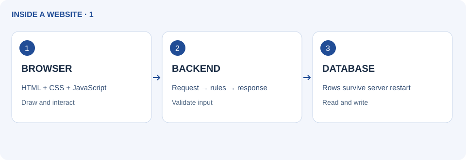
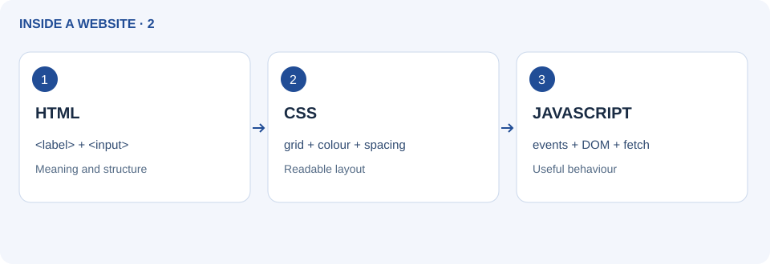
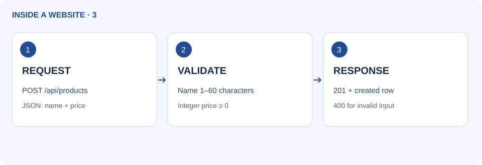
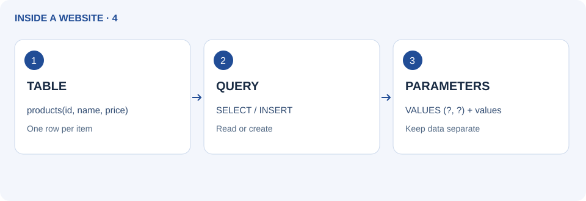
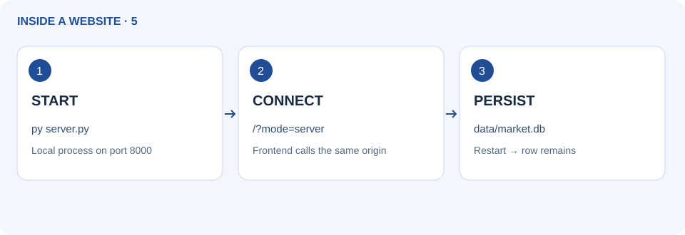
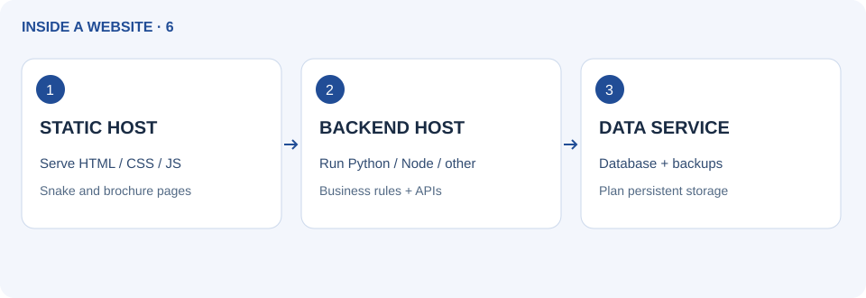
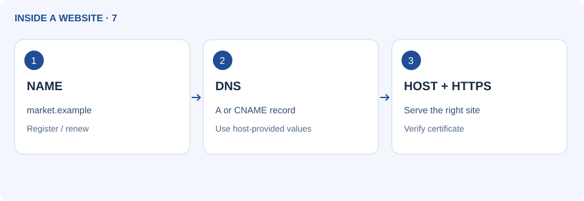
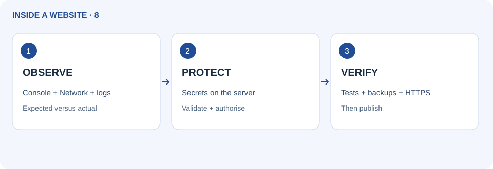

Website fundamentals: frontend to cloud
Website fundamentals: frontend से cloud। पहले चित्र देखें, फिर उदाहरण और अभ्यास करें।
Official references checked 27 September 2026. Service plans and interfaces can change; use the linked provider documentation for current limits.
1. See the whole website system

A website is a collection of pages and assets delivered to a browser. The frontend is what the browser runs. A backend handles requests and rules on a server. A database stores structured information. A static site can deliver files without a custom backend; its JavaScript may still be interactive. Snake is a static interactive example. Shared saved market records need a backend or managed service.
Try it
Open the layer demo below. Add Notebook at ₹40. Read the request trace. Notice the “browser simulation” label: this online preview does not contact a database. Refresh and observe the reset. Later you will run the real Python version.
Browser: GET /api/products
Backend: SELECT id, name, price FROM products
Response: [{"id":1,"name":"Rice · 1 kg","price":60}]Check
Explain where the page is drawn, where validation belongs, and where shared records would live. A screenshot is not a running backend.
हिंदी में पढ़ें
पूरी website व्यवस्था देखें
Website pages और assets का संग्रह है जो browser तक पहुँचता है। Frontend browser में चलता है। Backend server पर requests और नियम संभालता है। Database व्यवस्थित जानकारी रखता है। Static site बिना custom backend files दे सकती है; उसका JavaScript interactive हो सकता है। Snake इसका उदाहरण है। साझा saved market records के लिए backend या managed service चाहिए।
नीचे layer demo खोलें। Notebook ₹40 जोड़कर request trace पढ़ें। “Browser simulation” label देखें: online preview database से नहीं जुड़ता। Refresh करके reset देखें। आगे असली Python version चलाएँगे।
Page कहाँ बनता, validation कहाँ होता और साझा records कहाँ रहते हैं, समझाएँ। Screenshot चलती backend नहीं है।
Complete AI coaching prompt
Official references: MDN: how the web works · MDN: client/server overview
2. Code the frontend: HTML, CSS and JavaScript

HTML gives content structure; CSS controls layout and appearance; JavaScript handles behaviour. A button is HTML, its colour is CSS, and responding to its click is JavaScript. The DOM is the browser’s representation of that page. Responsive layouts adapt to screen size. Use labelled inputs, headings, focus styles and real buttons.
Try it
Download the starter. In index.html, find the product form. Change its heading; in styles.css change one panel colour. In app.js find render() and see how it creates table cells with textContent. Preview at phone and desktop widths.
<label for="name">Item name</label>
<input id="name" required>
<button id="hello" type="button">Try me</button>
/* styles.css */
button { padding: 12px 16px; min-height: 44px; }
// JavaScript, after the elements exist
document.getElementById("hello").addEventListener("click", () => {
document.getElementById("hello").textContent = "It works!";
});Check
Tab reaches name, price and Add. Long names wrap. Changing CSS must not change the sample price or backend rules.
हिंदी में पढ़ें
Frontend code: HTML, CSS और JavaScript
HTML content का structure, CSS रूप और layout, और JavaScript व्यवहार देता है। Button HTML है, रंग CSS है और click का जवाब JavaScript है। DOM browser में page का रूप है। Responsive layout screen के अनुसार बदलता है। Labels, headings, focus और असली buttons रखें।
Starter लें। index.html में form heading बदलें और styles.css में एक panel रंग बदलें। app.js में render() और textContent से table cells बनना देखें। Phone और desktop preview करें।
Tab से name, price और Add मिलें। लंबे नाम wrap हों। CSS बदलने से price या backend नियम न बदलें।
Complete AI coaching prompt
Official references: MDN: HTML basics · MDN: how the web works
3. Code the backend: requests, APIs and JSON

A server is a computer or process serving requests. An API is a defined way for programs to exchange information. Our Python backend handles GET to read items and POST to add one. JSON is the message format. Responses include status codes: 200 read success, 201 created, 400 invalid input, 404 unknown route. Validation must run on the server even when the browser checks inputs.
Try it
Read do_GET and do_POST in server.py. Find where JSON is parsed, where input is validated and where a response is sent. The short snippet illustrates a handler result; the downloadable server contains the complete HTTP handling.
# Inside the complete server handler:
name = data.get("name")
price = data.get("price")
if not isinstance(name, str) or not name.strip():
return self.send(400, {"error": "Name is required"})
# Full starter also checks type, length and price bounds.
self.send(201, {"id": product_id, "name": name, "price": price})Check
A blank name or negative price is rejected by the backend. An unknown route gets 404 instead of exposing files.
हिंदी में पढ़ें
Backend code: requests, API और JSON
Server requests का जवाब देने वाला computer या process है। API programs के बीच जानकारी का तय तरीका है। Python backend GET से items पढ़ता और POST से जोड़ता है। JSON message format है। 200 सफल read, 201 बनाया, 400 गलत input और 404 route नहीं मिला। Browser checks के साथ server validation भी चाहिए।
server.py में do_GET और do_POST पढ़ें। JSON पढ़ना, validation और response भेजना ढूँढें। छोटा snippet result समझाता है; download में पूरा HTTP server है।
खाली नाम या negative price backend रोके। अनजान route पर 404 आए, files न खुलें।
Complete AI coaching prompt
Official references: MDN: client/server overview
4. Code the database: tables, SQL and keys

A table contains rows and columns. A primary key identifies a row; a foreign key links tables. SQL can create, read, update and delete records (CRUD). SQLite stores this lesson’s database in a local file; PostgreSQL and MySQL commonly run as database services. Use placeholders for values, rather than joining user input into SQL. Transactions commit related writes together. Indexes help lookups but also need storage and write work.
Try it
Read schema.sql: id, name and integer rupee price. Read the parameterised INSERT in server.py. The sample supports read/create through HTTP; UPDATE/DELETE below are SQL learning examples, not implemented API endpoints.
SELECT id, name, price FROM products ORDER BY id;
-- In Python, bind values rather than concatenating input:
connection.execute("INSERT INTO products(name, price) VALUES (?, ?)",
("Notebook", 40))
-- SQL examples only: use a disposable practice database.
UPDATE products SET price = 45 WHERE id = 3;
DELETE FROM products WHERE id = 3;Check
Two products can share a name but must have different ids. Text containing a quote is stored as data; it must not become a SQL command.
हिंदी में पढ़ें
Database code: tables, SQL और keys
Table में rows और columns होते हैं। Primary key row पहचानती है; foreign key tables जोड़ती है। SQL से create/read/update/delete (CRUD) करते हैं। यहाँ SQLite local file है; PostgreSQL और MySQL अक्सर services होते हैं। Values के लिए placeholders लें, user text को SQL में न जोड़ें। Transaction writes commit करती है। Index lookup में मदद करता है लेकिन storage/write का काम बढ़ाता है।
schema.sql में id, name और integer रुपये price देखें। server.py का parameterised INSERT पढ़ें। HTTP में read/create हैं; नीचे UPDATE/DELETE केवल SQL उदाहरण हैं, API endpoints नहीं।
दो products का नाम एक हो सकता है, id अलग हो। Quote वाला text data रहे, SQL command न बने।
Complete AI coaching prompt
Official references: Python: sqlite3 and parameter binding
5. Run the complete frontend, backend and database

The downloaded project includes a real local Python server and SQLite database. Online GitHub Pages shows its browser simulation only. Opening the local server URL loads the frontend and API from one origin, avoiding a separate cross-origin setup. localhost/127.0.0.1 refers to your own device.
Try it
Install Python 3 from python.org. Extract the starter, open a terminal in that folder and run py server.py on Windows, or python3 server.py on macOS/Linux. Open http://127.0.0.1:8000/?mode=server. Add Notebook ₹40; reload, stop with Ctrl+C, restart and check it remains. Port busy? Run py server.py --port 8001 and use that printed URL.
// app.js: a real API request, after starting server.py
const response = await fetch("./api/products", {
method: "POST",
headers: {"Content-Type": "application/json"},
body: JSON.stringify({name: "Notebook", price: 40})
});
const row = await response.json();
if (!response.ok) throw new Error(row.error);
console.log(row.id);Check
Real mode says REAL LOCAL BACKEND. Network tools show GET 200 and POST 201. data/market.db appears locally. Refresh alone does not erase the new row.
हिंदी में पढ़ें
पूरा frontend, backend और database चलाएँ
Download में असली local Python server और SQLite database हैं। Online GitHub Pages केवल browser simulation दिखाता है। Local server URL से frontend और API एक origin से मिलते हैं। localhost/127.0.0.1 आपका अपना device है।
python.org से Python 3 लें। ZIP निकालकर उसी folder में terminal खोलें। Windows पर py server.py, macOS/Linux पर python3 server.py चलाएँ। http://127.0.0.1:8000/?mode=server खोलें। Notebook ₹40 जोड़ें; reload और server restart पर भी रहे। Port busy हो तो --port 8001 लें और नया URL खोलें।
असली mode में REAL LOCAL BACKEND दिखे। Network में GET 200 और POST 201 आए। data/market.db बने। Refresh से नया row न मिटे।
Complete AI coaching prompt
Official references: Python: sqlite3 and parameter binding · Python downloads
6. Server, cloud, hosting and service companies

Hosting makes an application reachable. Cloud providers supply remote computing resources such as virtual machines, storage and databases. Managed hosting handles some operations for you; it still uses servers. A static host serves files; a backend host runs compatible code. A managed database is a separate responsibility. One company can offer several layers. Choose by runtime, persistence, region, support, pricing and limits.
Try it
Use the provider directory below. Match Snake to static hosting. Match this Python demo to a Python-capable backend host plus persistent database/storage. A local SQLite file on temporary cloud storage may disappear; decide persistence before deployment. Check current plans on official pages; do not assume a free tier suits production.
Static project: browser ← static hosting
Dynamic project: browser ↔ API host ↔ database
Cloud = rented compute/storage/services
Hosting = making your application availableCheck
Your plan names a frontend host, backend runtime and database location, or explains why the last two are unnecessary.
हिंदी में पढ़ें
Server, cloud, hosting और कंपनियाँ
Hosting application को पहुँच योग्य बनाता है। Cloud providers remote compute, storage और databases देते हैं। Managed hosting कुछ संचालन संभालती है; servers फिर भी होते हैं। Static host files देता है; backend host compatible code चलाता है। Managed database अलग जिम्मेदारी है। एक कंपनी कई layers दे सकती है। Runtime, persistence, region, support, कीमत और limits देखकर चुनें।
नीचे directory से Snake के लिए static hosting चुनें। Python demo के लिए Python-capable backend और persistent database/storage चुनें। Temporary cloud storage पर SQLite file मिट सकती है; पहले persistence तय करें। Official pages पर वर्तमान plans देखें।
Plan में frontend host, backend runtime और database जगह हो, या बताएँ कि बाद के दो क्यों नहीं चाहिए।
| Role | Provider | Use |
|---|---|---|
| Static sites | GitHub Pages | HTML/CSS/JS sites; no running Python server |
| Static sites + optional functions | Cloudflare Pages | Static deployment; backend functions have a separate runtime |
| Web deployment | Vercel | Frontend deployments and supported server functions |
| Web deployment | Netlify | Static sites and serverless functions |
| Backend hosting | Render | Web service processes; check persistence and plan limits |
| Managed database | Supabase | Hosted PostgreSQL and related backend services |
| Cloud infrastructure | Amazon Web Services | Compute, storage and managed services |
| Cloud infrastructure | Microsoft Azure | Cloud resources such as compute, storage and databases |
| Cloud infrastructure | Google Cloud | Compute, storage and other managed cloud services |
| Domain registration | Cloudflare Registrar / Namecheap | Register and renew names; hosting may be separate |
| Git hosting + static publishing | GitLab Pages | Repository workflow and static site publishing |
Complete AI coaching prompt
Official references: AWS: cloud computing · Render: web services
7. Domain names, DNS, URLs and HTTPS

A domain name is a readable name, such as market.example. A URL adds protocol and path. A registrar manages registration/renewal; DNS records direct names to destinations; hosting serves the content. These may be separate companies. A records address IPv4 destinations; CNAME aliases a name. Follow your host’s exact domain instructions. HTTPS protects data in transit and requires a valid certificate; it does not prove a seller is trustworthy.
Try it
Split https://market.example/products into scheme, domain and path. Draw registrar → DNS → host. Use the free provider subdomain for practice; a custom domain is optional. Never copy a made-up IP address into real DNS.
https://market.example/products
│ │ └─ path
│ └─ domain (reserved example)
└─ scheme
A → IPv4 address supplied by the host
CNAME → hostname supplied by the hostCheck
You can explain why buying a name does not upload a website. After DNS changes, verify the hostname and certificate; updates may take time.
हिंदी में पढ़ें
Domain name, DNS, URL और HTTPS
Domain पढ़ने योग्य नाम है, जैसे market.example। URL में protocol और path जुड़ते हैं। Registrar registration/renewal, DNS नाम का destination और hosting content संभालती है। कंपनियाँ अलग हो सकती हैं। A record IPv4 destination और CNAME नाम का alias है। Host की सही instructions लें। HTTPS रास्ते में data बचाता है; seller भरोसेमंद है, यह साबित नहीं करता।
https://market.example/products को scheme, domain और path में बाँटें। Registrar → DNS → host बनाएँ। अभ्यास में provider का subdomain लें; custom domain optional है। काल्पनिक IP असली DNS में न डालें।
समझाएँ कि नाम खरीदने से website upload क्यों नहीं होती। DNS बदलाव के बाद hostname और certificate जाँचें; update में समय लग सकता है।
Complete AI coaching prompt
Official references: Cloudflare: domain versus URL · Cloudflare Registrar · Namecheap domains
8. Build safely, debug and choose the next step

Frontend code is visible to visitors, so backend secrets belong in server environment settings. Authentication asks who a user is; authorisation asks what they may do. CORS controls browser cross-origin reading; it is not authentication. Use browser Network/Console tools and server logs to locate errors. This local teaching server listens only on 127.0.0.1; public production needs a suitable server, access controls, HTTPS and backups.
Try it
Create a checklist: valid form, invalid form, offline API, unknown route, phone layout, keyboard use and restart persistence. Open /missing to see 404. Draw where frontend, API and database would run before asking AI to extend the project.
Debug in order:
1. Did the browser send the request?
2. Was the URL / method correct?
3. What status and JSON came back?
4. What did the server log say?
5. Did the database commit?Check
You can show one working request and one rejected request, and explain why uploading server.py to a static host does not run it.
हिंदी में पढ़ें
सही बनाएँ, debug करें और अगला कदम चुनें
Frontend code visitors देख सकते हैं; backend secrets server environment में रखें। Authentication पहचान और authorisation अधिकार जाँचता है। CORS browser cross-origin reading नियंत्रित करता है; login नहीं है। Network/Console और server logs से error ढूँढें। Local teaching server केवल 127.0.0.1 सुनता है; public production में उचित server, access control, HTTPS और backup चाहिए।
Checklist बनाएँ: valid/invalid form, बंद API, अनजान route, phone layout, keyboard और restart persistence। /missing पर 404 देखें। AI से बढ़ाने से पहले frontend, API और database की जगह बनाएँ।
एक चलती और एक rejected request दिखाएँ। समझाएँ कि static host पर server.py upload करने से वह चलता क्यों नहीं।
Complete AI coaching prompt
Official references: MDN: client/server overview · MDN: CORS